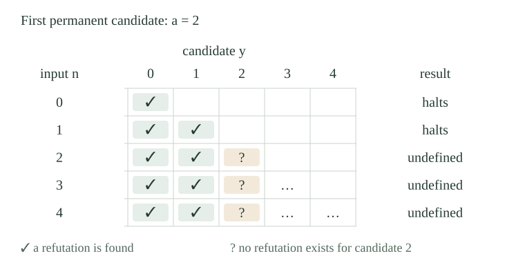

Use the fixed ordinary program numbering \(\varphi_e\), and write \(W_e=\operatorname{dom}(\varphi_e)\). The totality, finiteness, and infinitude index sets are
Thus \(\mathrm{INF}=\mathbb N\setminus\mathrm{FIN}\). Infinitude concerns the set of inputs on which the program halts. It does not require infinitely many different output values. Totality requires that every input be in the domain, so \(\mathrm{TOT}\subseteq\mathrm{INF}\), but an infinite domain may omit inputs.
A set \(H\) is \(\Pi_2\)-complete when \(H\in\Pi_2\) and every \(A\in\Pi_2\) has an ordinary many-one reduction to \(H\). Equivalently, for each such \(A\) there is a total computable \(f:\mathbb N\to\mathbb N\) satisfying
Use the corresponding definition with \(\Sigma_2\) for \(\Sigma_2\)-completeness, as in the hierarchy completeness definition with empty background oracle. The input \(x\) is translated into finite program text. The translator must halt even when the resulting program does not.
We have \(\mathrm{TOT},\mathrm{INF}\in\Pi_2\) and \(\mathrm{FIN}\in\Sigma_2\).
The existing descriptions of totality and finiteness give
Here \(b\) is the ordinary bounded evaluator's encoded output, and \(W_{e,s}\) are the uniform finite stages. Both displayed matrices are primitive recursive after the bounded quantifier is absorbed. Taking the complement of \(\mathrm{FIN}\) gives \(\mathrm{INF}\in\Pi_2\) by complement duality. The bound \(a=0\) allows an empty domain. These upper bounds alone do not establish completeness.
Fix an ordinary computable relation \(R(x,y,z)\). For paired input \(\langle x,y\rangle\), define the witness-search program
It tests \(z=0,1,2,\ldots\) in order and returns the first successful \(z\). Each individual test terminates because \(R\) is computable. If no test succeeds, this computation is undefined. This is sequential minimization of a total test, so \(P_R\) is partial recursive jointly in \(x,y\).
Choose one index \(p_R\) for its paired-input program. The parameter theorem supplies the specified map
For this fixed \(R\), \(p_R\) is a constant and \(f_R\) is primitive recursive. Choosing this constant does not assert that the original matrix is primitive recursive. The code map inserts \(x\) into the program before any witness search is run.
For every \(x\),
If every \(y\) has a witness, the search on input \(y\) reaches its least witness after finitely many terminating tests. Consequently the specialized program halts on every input. The number of tests may depend on \(y\).
If the right-hand side fails, some input \(y_0\) has no witness. Every test on that input returns a negative answer, so \(P_R(x,y_0)\) never halts. The specialized program is therefore not total. This proves both directions for the actual index map \(f_R\).
The index set \(\mathrm{TOT}\) is \(\Pi_2\)-complete. For every \(A\in\Pi_2\), a reduction \(A\le_m\mathrm{TOT}\) can be chosen primitive recursive.
Membership in \(\Pi_2\) was proved in . By the computable-matrix normal form, any \(A\in\Pi_2\) has a computable relation \(R\) with
The map in is primitive recursive, and identifies this right-hand side with \(f_R(x)\in\mathrm{TOT}\). It therefore gives a reduction of the arbitrary set \(A\), proving completeness.
The same fixed-whole-domain comparison map transfers this lower bound to inclusion and equality of enumerable domains. In both comparisons, one side is an index for all natural numbers.
A program halts with output zero exactly on the even inputs. Is its index in \(\mathrm{TOT}\), \(\mathrm{FIN}\), or \(\mathrm{INF}\)?
Its domain is the infinite set of even numbers. Thus the index belongs to \(\mathrm{INF}\), does not belong to \(\mathrm{FIN}\), and does not belong to \(\mathrm{TOT}\), since the computation on input one diverges. Such a partial recursive program exists: test parity, return zero on an even input, and otherwise perform a search for a witness to \(1=0\).
The range of this partial function is only \(\{0\}\). The classification concerns the domain, so a finite range has no bearing on membership in \(\mathrm{FIN}\).
Now fix a computable relation \(R(x,y,z)\) used in an existential-universal description. Call \(y\) a permanent candidate at \(x\) when \(\forall z\;R(x,y,z)\). To refute all candidates through \(n\), use the bounded refutation test
This is a total computable relation jointly in \(x,n,t\): run the finitely many tests \(R(x,y,z)\) for \(y\le n\) and \(z<t\). The bounded quantifiers preserve decidability. Different candidates may have different refutations; \(t\) is only a common upper bound on their witnesses.
For every \(x,n\),
A successful bounded test already supplies every required refutation. Conversely, choose a refutation \(z_y\) for each of the finitely many \(y=0,\ldots,n\), and take \(t=1+\max\{z_0,\ldots,z_n\}\). Then \(z_y<t\) for each candidate, so the bounded test succeeds. Equivalently, one may prove the common-bound assertion by induction, enlarging the previous bound with the next witness.
This is a finite witness collection, not a single refutation that must work for every candidate.
On paired input \(\langle x,n\rangle\), define the prefix-refutation program \(Q_R(x,n)\) by searching \(t=0,1,2,\ldots\) for \(H_R(x,n,t)\). If a test succeeds, return zero; if none succeeds, remain undefined. The total computability of \(H_R\), sequential minimization, and strict composition make \(Q_R\) partial recursive jointly in both inputs.
Choose an index \(q_R\) for this paired-input program and define
The map \(g_R\) is primitive recursive. By , its exact domain is
Membership is discovered by a finite search when true. The program does not ask whether a candidate is permanent, nor wait for a negative answer from an infinite universal test.
If \(a\) is the least permanent candidate at \(x\), then
For \(n<a\), every \(y\le n\) is smaller than the least permanent candidate. Hence it fails permanence, so \(\exists z\;\neg R(x,y,z)\). The domain description in puts \(n\) in the domain.
For \(n\ge a\), the bounded list includes \(a\), which has no refutation. The bounded test can never succeed, so \(n\) is outside the domain. This proves the equality. In particular the domain is finite; if \(a=0\), it is empty.

If \(\neg\exists y\;\forall z\;R(x,y,z)\), then \(W_{g_R(x)}=\mathbb N\).
Every candidate \(y\) has a refutation \(z\) with \(\neg R(x,y,z)\). Fix any input \(n\). The finitely many candidates through \(n\) have a common witness bound by , so the search defining \(Q_R(x,n)\) halts. Since \(n\) was arbitrary, the domain is all of \(\mathbb N\), and is therefore infinite.
The conclusion does not require one bound that refutes every candidate at once: the bound can increase with \(n\).
The index set \(\mathrm{FIN}\) is \(\Sigma_2\)-complete. For every \(A\in\Sigma_2\), a reduction \(A\le_m\mathrm{FIN}\) can be chosen primitive recursive.
Membership was established in . Write the arbitrary \(\Sigma_2\) set in computable-matrix normal form as
If \(x\in A\), there is a least permanent candidate, and makes \(W_{g_R(x)}\) finite. If \(x\notin A\), makes this domain all of \(\mathbb N\), hence not finite. Therefore
The particular map \(g_R\) is primitive recursive by its parameter construction, proving the required reduction in both directions.
Finite domains and finite complements have different index classifications. The cofinite-domain index set is complete for the third existential level; its proof uses movable complement markers rather than the initial-segment domain above.
The index set \(\mathrm{INF}\) is \(\Pi_2\)-complete. For every \(A\in\Pi_2\), a reduction \(A\le_m\mathrm{INF}\) can be chosen primitive recursive.
Its upper bound is in . If \(A\in\Pi_2\), its complement is \(\Sigma_2\). Apply the specified construction in to obtain a primitive-recursive \(g\) with
Negating both sides gives \(x\in A\Longleftrightarrow g(x)\in\mathrm{INF}\). The numerical map has not changed. This is complementing both source and target of a many-one reduction, rather than reversing the target answer alone.
We have \(\mathrm{TOT},\mathrm{INF}\notin\Sigma_2\) and \(\mathrm{FIN}\notin\Pi_2\). In particular none of these three index sets is c.e., co-c.e., or decidable.
By properness of the hierarchy, some \(\Pi_2\) set is not \(\Sigma_2\). If \(\mathrm{TOT}\) were \(\Sigma_2\), reducing that set to \(\mathrm{TOT}\) and using computable-preimage closure would put it in \(\Sigma_2\), a contradiction. The same argument applies to \(\mathrm{INF}\). Dually a \(\Sigma_2\) set outside \(\Pi_2\) reduces to \(\mathrm{FIN}\), proving its exclusion.
Every c.e. or co-c.e. set is respectively \(\Sigma_1\) or \(\Pi_1\); padding puts both first-level classes inside both second-level classes. A decidable set lies in both first-level classes. The exclusions just proved therefore rule out all three possibilities for each index set. This is stronger than the undecidability given by Rice's theorem for totality.
Requiring an enumerable domain to admit a decision procedure leads to the complete third-level computable-domain index problem. The condition asks for some decision procedure for the domain, rather than totality of its original enumerating program.
Are \(\mathrm{TOT}\) and \(\mathrm{INF}\) many-one equivalent? Can either reduce to \(\mathrm{FIN}\), or can \(\mathrm{FIN}\) reduce to either?
Since \(\mathrm{TOT}\) and \(\mathrm{INF}\) are both \(\Pi_2\)-complete, each reduces to the other by applying completeness to the other's \(\Pi_2\) membership. Thus \(\mathrm{TOT}\equiv_m\mathrm{INF}\), even though they are different sets of indices.
The shared positive-level completeness gives more: \(\mathrm{TOT}\) and \(\mathrm{INF}\) are computably isomorphic. An ordinary computable permutation, with computable inverse, preserves their membership answers after renaming the indices.
If either reduced to \(\mathrm{FIN}\), the \(\Sigma_2\) upper bound for \(\mathrm{FIN}\) would pull back to a \(\Sigma_2\) upper bound for that source, contradicting . If \(\mathrm{FIN}\) reduced to either, its source would be \(\Pi_2\), contradicting the same theorem. Hence each universal complete set is many-one incomparable with \(\mathrm{FIN}\).